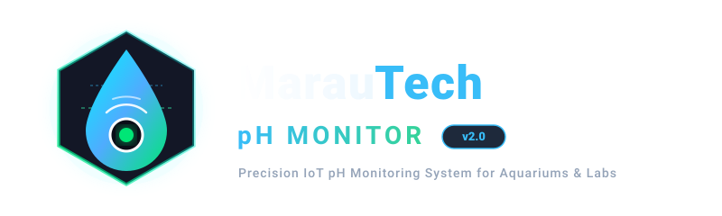

A complete open source ecosystem for aquariums, hydroponics, and laboratories. Featuring calibrated ESP32 firmware, real-time web dashboard, Home Assistant MQTT, and a native Material 3 Android app with home screen widgets.

Zero cloud lock-in. Everything communicates directly over your local Wi-Fi network with industrial-grade stability.
Calibrate with standard buffers (pH 4.01, 7.00, 9.18) or custom solutions. Live sample standard deviation analysis guarantees measurement stability before locking values.
Connects directly to the ESP32 IP address via cleartext HTTP. No subscriptions, no external cloud dependencies, and zero latency.
Built with modern Kotlin and Jetpack Compose. Includes 3 customizable home screen widgets (Small, Medium, Large) for glanceable pH and temperature readings.
WorkManager-driven background monitoring notifies you only on state transitions (NORMAL to LOW/HIGH pH), eliminating notification spam.
Native MQTT with Home Assistant auto-discovery, live entity states, and Pushover mobile emergency push alerts when thresholds are breached.
Automatic round-robin JSONL history logging on LittleFS flash storage. View interactive historical graphs on both the web panel and Android app.
A premium, dedicated Android application designed to make aquarium and reservoir monitoring effortless.
Standard off-the-shelf electronic modules compatible with ESP32-WROOM-32.
| Component | Description | Pin / Connection |
|---|---|---|
| ESP32 DevKit V1 | Dual-core 240MHz MCU with Wi-Fi & Bluetooth | Core Controller |
| pH Sensor & Board | Analog pH-4502C or industrial BNC probe module | Analog Out ➔ GPIO 35 (ADC1_CH7) |
| DS18B20 Temp Sensor | Digital 1-Wire waterproof temperature probe (4.7kΩ pull-up) | Data Line ➔ GPIO 23 |
| ST7789 TFT LCD | 2.0" / 2.4" 320x240 SPI color display | MOSI: 18, SCK: 19, CS: 5, DC: 16, RST: 4 |
| Active Buzzer | Audible alarm indicator on high/low pH breach | Control Pin ➔ GPIO 22 |
| Rotary Encoder (Optional) | Physical menu navigation & calibration controls | CLK: 32, DT: 33, SW: 25 |
Integrate MarauTech pH Monitor directly into your scripts or custom automation.
| Method | Endpoint | Auth | Description |
|---|---|---|---|
| GET | /api/status |
Public | Returns real-time pH, voltage, temperature, alarms, uptime, and WiFi RSSI in JSON. |
| GET | /api/history |
Public | Returns stored historical records (JSON array: t, p, te, v, a). |
| POST | /api/calibrate |
Basic Auth | Initiates 3-point calibration (neutral, acid, base, custom, reset). |
| GET | /api/calibrate/status |
Public | Polls calibration progress, stability percentages, and error codes. |
| GET | /api/config |
Basic Auth | Reads device thresholds, alarm hold times, and integration statuses. |
| POST | /api/config |
Basic Auth | Saves alarm limits, MQTT settings, and Pushover tokens. |